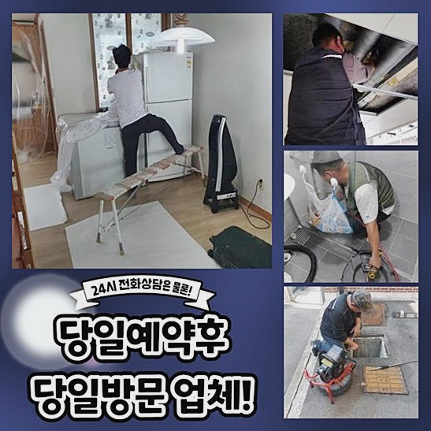
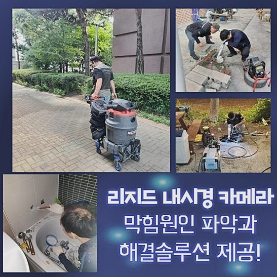
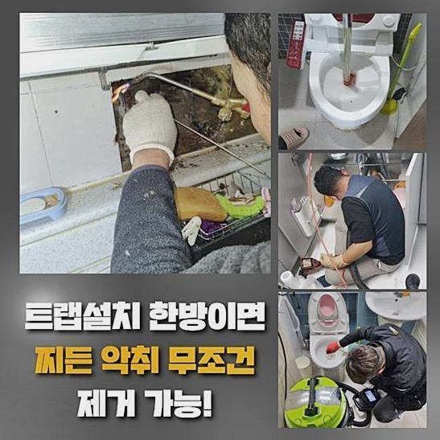
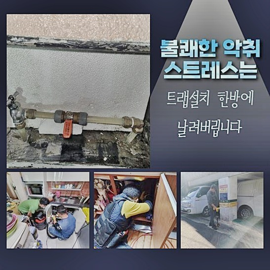
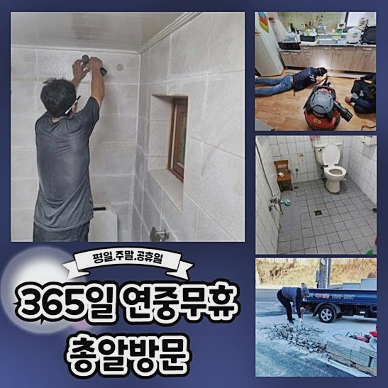
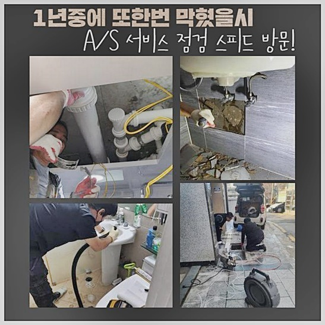
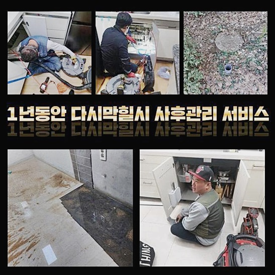

🏠 수원 매교동오수관막힘 화서동 배수구뚫기 설비공사
용인시 처인구 배관막힘 전문 시공 후기

📋 작업 개요
- 위치: 용인시 처인구, 수원시 영통구, 화성시 동탄
- 서비스 유형: 배관막힘, 내시경점검
- 작업 일시:
- 업체명: 하수구수사대 (010-5615-2118)
🔍 문제 상황
수원 매교동오수관막힘 화서동 배수구뚫기 설비공사
빈번히 일어나는 배수장애들을 고쳐내고 복구하는 배관 해결사입니다
여러분들이 의뢰할땐 응당 해당 사항과 관련해 도움을 드립니다
갑자기 욕실쪽에서 하수도가 이상하다는 증상으로 빠르게 해당 위치로 방문했어요
욕실의 경우라면 이용하고서 머리카락과 이런저런 잔해가 쌓이게되어 배수가 이뤄지지 못하는 경우가 참 많죠
이같은 문제에선 주변에서 구입가능한 개체로는 증상을 꺼트리는것이 쉽지 않아서 뚫을땐 전문성이 뛰어난 기기를 이용해서 문제양상을 보이는 위치를 시정해야겠습니다
가끔 끓어오른 온수들을 부어서 증세가 심각한 원인을 없애보고자 무분별하게 진행하시는 의뢰인분도 있으세요
이러한 방식도 증상완화를 기대하기엔 어렵습니다
뜨거운 물을 부어주면 이물질은 딱딱하게 굳어지는 특성을 띄므로 배관 컨디션을 악화시켜요
그러므로 배수관의 문제들은 성능좋은 장비라인을 운용하는것이 좋습니다
진단 시점에는 이용해주는 기기를 점검을 위해 체크해보고 고객이 말씀하신 장소로 신속히 달려갔죠
간소한 배수관의 증세를 각론하고 앞서 안내한것처럼 머리카락들과 석회와 같은 이물이 켜켜히 쌓이죠

🔎 원인 분석
💡 전문가 진단: 정밀 진단 장비를 사용하여 슬러지의 고착 여부를 판명하고 타격/세척 작업을 실시했습니다.
이러한 이유로 주기를 설정해 관리법 실시를 이어나가야되요
이제는 작업방식을 일러드린 뒤 여러분께 원인들을 파악하여 고민들을 무슨 방법을 통해 해결하는지 세밀하게 안내할 예정입니다
증세가 심각한 지점은 화장실쪽에 매립된 아래 배관이였어요
체크하니 쉽게 볼 수 있는 사각형태의 부속이 아닌 트렌치부속으로 보여졌어요
배수불가는 물론 예상치않은 물이 솟아오르는 증세도 지속되고 있었습니다
보통은 트랩부를 통해 라인으로 흘러가지않은 이물은 여과하여 이물질만 남겨두고 하수들은 아래로 운반시켜주는 이점이 있습니다
허나 내부에 있던 이물이 바깥으로 역류를 동반하며 트랩부품도 제 기능을 수행할 수 없는 모습이였습니다
의뢰인분은 증상들이 야기되고 하수설비를 쓸 수 있는 상황이 아니라고 고통을 털어놓으셨는데 불편들이 어마어마했을것으로 판단되었는데요
이처럼 화장실내부의 설비들에서 증상들이 발현되면 예기치않은 불편이 발현될 가능성이 커요
그러므로 빠르고 명확하게 원인들을 완화하는게 0순위로서 중요합니다
문제 시정을 위해선 증세의 시발점부터 인지해야되겠습니다
앞코의 렌즈들이 접착된 내시경장비로 하수관으로 이용할때에는 이물의 위치를 주시해주며 이물 누적의 양상을 보고 수리를 하게되죠
해당 이점으로 상당수의 증상들이 발생되면 절대적으로 써야되는 전문기기죠

🔧 작업 과정
앞부분에서 잔여물이 많은 까닭에 장비를 하수관으로 밀어주는게 쉽지 않았습니다
하지만 이런 변수에 좌절하기엔 이릅니다
반복하니 비로소 장비를 삽입시켰고 심부까지 파악해보고자 영상을 보던 중에 시야확보에 문제가 있었어요
벽측에는 잔해물이 상당했어요
그리고 내측을 확실하게 파악할 수 없는것으로 파악하건대 외부도 깊은 지점에도 엄청난 부피의 잔해가 쌓인걸 보았습니다
지속적으로 배수구로 내시경기를 투입해보니 벽측에선 바닥잔해로 파악되는게 확인되었죠
하수관로의 심층부엔 정체가 불분명한 모습으로 자리잡은 이물들이 잔존해 있던 상태였습니다
장치들을 밀어넣어도 배수공간들은 확인되지 않았지만 알기 힘든 이물은 확실하게 목격되었죠
이물이 특정된 상태가 아님에도 고착화된 잔여물이 하수관로의 끝머리서부터 침전된 모습을 알 수 있었어요
문제가 심각했던 장소였음에도 고객의 의뢰였기에 현 시점을 방치해선 안됐죠
하수도에 누적된 대형의 오염원은 손을통해 걷어내주고 하수도 깊이 쌓인 개체는 샤프트 장치를 통해서 깨끗하게 해줄 계획을 세우게 되었어요
전문성을 갖춘 기계를 가용하여 신속하게 작업에 착수했습니다
그럼에도 슬러지들을 청소하며 의문의 것이 있었는데요
도대체 왜 바닥지의 조각이 하수라인에서 축적된건지 의문이였죠
이런 궁금증을 가지고 작업을 하다보니 고객의 경우 해당 사항들을 말씀하셨는데요
듣고보니 얼마전 도배작업을 했는데 그때 잔해들이 배수구로 빠진것으로 파악된다고 전달하셨어요
이러한 공사들이 진행되었을땐 잔해물은 기술자들이 정리하는 것이 원칙인데 종종 이에 대해 철두철미하지 못한 전문가면 이처럼 전문적이지 못하게 잔해수돗물을 버립니다
추측하건대 저희업체가 방문했었던 현장에서 시작해 이런 까닭들로 스트레스를 만성적으로 받아온걸로 파악되었습니다
여기저기 장판오염물이라는 폐기물들이 물빠짐을 억제시켜서 나갔어야하는 오수가 흐름을 찾아가지 못했던것이죠
반복을 거친 이물청소와 석션을 진행한 결과 비로소 하수도를 뚫어내었어요


✅ 작업 완료
배수과정이 제대로 진행되는지 테스트를 거치니 수월하게 배수되었어요
작업을 하고난뒤 이처럼 내려가야하나 하수라인이 이물로 막히게되며 흐름이 멈춰 솟구치기까지 한것입니다
다양한 현장들을 시정해왔으나 분야는 달라고 전문업체의 시각에서는 안좋은 기분이 밀려오고 의뢰인이 감내했을 불편에 안타까움마저 들죠
이것처럼 문제들을 완벽히 작업하고서 저희들도 마무리 후 발걸음을 옮겼죠
예기치못하게 불현듯 배수장애가 나타나면 이 글을 기초로 해 안전하게 처리하시는 게 합리적입니다!
또다른 궁금증이 있을 경우 때에 상관없이 전화를 걸어 질의하셔도 괜찮으니 아무쪼록 문의가 필요할 경우 의뢰인분에게 도와드릴게요!




⚠️ 하수구 배관 막힘 예방 및 관리 가이드
- ✅ 머리카락, 비닐, 물티슈 등 물에 분해되지 않는 이물질은 절대 흘려보내지 마세요.
- ✅ 기름기 많은 식기는 설거지 전 키친타올로 먼저 기름때를 닦아내세요.
- ✅ 주기적으로 배수구에 뜨거운 물을 가득 부어주어 유지방 고착을 방지하세요.
- ✅ 작업 후 1년 이내 재발 시 무상 A/S 보증 서비스를 제공합니다.
💡 핵심 정리
- 확실한 장비 작업(내시경 점검 및 샤프트 스케일링)으로 원인을 뿌리 뽑습니다.
- 작업 후 1년 이내에 동일한 부위 재발 시 100% 무상 A/S 서비스를 보장합니다.
- 서울 · 경기 · 인천 전 지역에 24시간 언제든 긴급 출동할 수 있도록 항시 대기 중입니다.
❓ 자주 묻는 질문 (FAQ)
🚨 용인시 처인구 배관막힘 문제로 고민이신가요?
정확한 원인 진단과 확실한 시공으로 재발 없는 해결을 약속드립니다.
24시간 긴급 출동 | 서울 · 경기 · 인천 전지역 | 1년 내 재발 시 무상 A/S